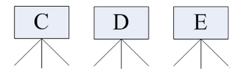
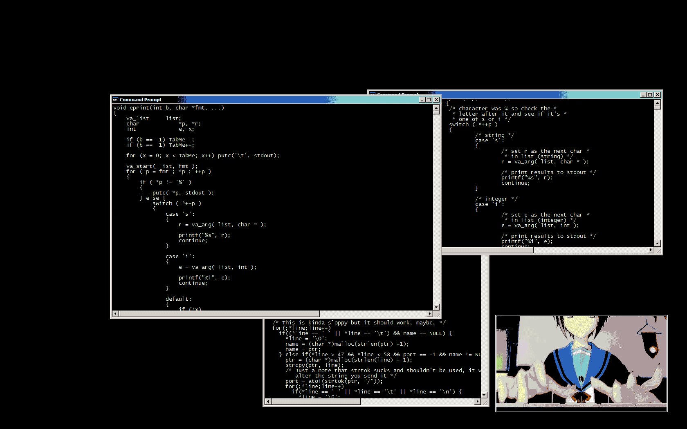

Linux入门
Linux应用领域¶
服务器领域¶
- Linux 在服务器领域的应用是其重要分支
- Linux 免费、稳定、高效等特点在这里得到了很好的体现
- 早期因为维护、运行等原因同样受到了很大的限制
- 近些年来 Linux 服务器市场得到了飞速的提升，尤其在一些高端领域尤为广泛
嵌入式领域¶
- 近些年来 Linux 在嵌入式领域的应用得到了飞速的提高
- Linux 运行稳定、对网络的良好支持性、低成本，且可以根据需要进行软件裁剪，内核最小可以达到几百 KB 等特点，使其近些年来在嵌入式领域的应用得到非常大的提高

Tip
主要应用：机顶盒、数字电视、网络电话、程控交换机、手机、PDA、等都是其应用领域，得到了 Google、三星、摩托罗拉、NEC 等公司的大力推广
个人桌面领域¶
- 此领域是传统 Linux 应用最薄弱的环节
- 传统 Linux 由于界面简单、操作复杂、应用软件少的缺点，一直被 Windows 所压制
- 近些年来随着 Ubuntu、Fedora 等优秀桌面环境的兴起，同时各大硬件厂商对其支持的加大，Linux 在个人桌面领域的占有率在逐渐的提高
移动设备操作系统¶
各种品牌的Android手机
文件系统¶
windows 文件系统¶
在 Windows 下，打开 “计算机”，我们看到的是一个个的驱动器盘符：

每个驱动器都有自己的根目录结构，这样形成了多个树并列的情形，如图所示：

Linux 文件系统¶
在 Linux 下，我们是看不到这些驱动器盘符，我们看到的是文件夹（目录）：

Ubuntu 没有盘符这个概念，只有一个根目录 /，所有文件都在它下面

用户根目录¶
位于 /home/user，称之为用户工作目录或家目录，表示方式：
/home/user
或者
~
Note
/home/user中的user是用户目录名，目前我们的用户是itcast
linux主要目录速查表¶
| 目录 | 描述 |
|---|---|
/ |
根目录。一般根目录下只存放目录，在 linux 下有且只有一个根目录，所有的东西都是从这里开始 当在终端里输入 /home，其实是在告诉电脑，先从 /（根目录）开始，再进入到 home 目录 |
/bin，/usr/bin |
可执行二进制文件的目录，如常用的命令 ls、tar、mv、cat 等 |
/boot |
放置 linux 系统启动时用到的一些文件，如 linux 的内核文件：/boot/vmlinuz，系统引导管理器：/boot/grub |
/dev |
存放linux系统下的设备文件，访问该目录下某个文件，相当于访问某个设备，常用的是挂载光驱mount /dev/cdrom /mnt |
/etc |
系统配置文件存放的目录，不建议在此目录下存放可执行文件，重要的配置文件有，/etc/inittab，/etc/fstab，/etc/init.d，/etc/X11，/etc/sysconfig，/etc/xinetd.d |
/home |
系统默认的用户家目录，新增用户账号时，用户的家目录都存放在此目录下 |
~ |
表示当前用户的家目录，~edu 表示用户 edu 的家目录 |
/lib/usr/lib/usr/local/lib |
系统使用的函数库的目录，程序在执行过程中，需要调用一些额外的参数时需要函数库的协助 |
/lost+fount |
系统异常产生错误时，会将一些遗失的片段放置于此目录下 |
/mnt，/media |
光盘默认挂载点，通常光盘挂载于 /mnt/cdrom 下，也不一定，可以选择任意位置进行挂载 |
/opt |
给主机额外安装软件所摆放的目录 |
/proc |
此目录的数据都在内存中，如系统核心，外部设备，网络状态，由于数据都存放于内存中，所以不占用磁盘空间，比较重要的文件有：/proc/cpuinfo、/proc/interrupts、/proc/dma、/proc/ioports、/proc/net/*等 |
/root |
系统管理员root的家目录 |
/sbin/usr/sbin/usr/local/sbin |
放置系统管理员使用的可执行命令，如 fdisk、shutdown、mount 等。与 /bin 不同的是，这几个目录是给系统管理员 root 使用的命令，一般用户只能"查看"而不能设置和使用 |
/tmp |
一般用户或正在执行的程序临时存放文件的目录，任何人都可以访问，重要数据不可放置在此目录下 |
/srv |
服务启动之后需要访问的数据目录，如 www 服务需要访问的网页数据存放在 /srv/www内 |
/usr |
应用程序存放目录 |
/usr/bin |
存放应用程序 |
/usr/share |
存放共享数据 |
/usr/lib |
存放不能直接运行的，却是许多程序运行所必需的一些函数库文件 |
/usr/local |
存放软件升级包 |
/usr/share/doc |
系统说明文件存放目录 |
/usr/share/man |
程序说明文件存放目录 |
/var |
放置系统执行过程中经常变化的文件 |
/var/log |
随时更改的日志文件 |
/var/spool/mail |
邮件存放的目录 |
/var/run |
程序或服务启动后，其 PID 存放在该目录下 |
Note
特别关注:
- 用户目录
/home/user或~
其他的作为后续查询使用
终端命令行¶
为啥要学Linux终端命令¶

- 很多人可能在电视或电影中看到过类似的场景，黑客面对一个黑色的屏幕，上面飘着密密麻麻的字符，梆梆一顿敲，就完成了窃取资料的任务。
- Linux 刚出世时没有什么图形界面，所有的操作全靠命令完成，就如同电视里的黑客那样，充满了神秘与晦涩。近几年来，尽管 Linux 发展得非常迅速，图形界面越来越友好，但是在真正的开发过程中，Linux 命令行的应用还是占有非常重要的席位，而且许多Linux功能在命令行界面要比图形化界面下运行的快。可以说不会命令，就不算会 Linux。
- 在职场中，大量的 服务器维护工作 都是在 远程 通过 SSH 客户端 来完成的，并没有图形界面，所有的维护工作都需要通过命令来完成。如 磁盘操作、文件存取、目录操作、进程管理、文件权限 设定等
- Linux 发行版本的命令大概有 200 多个，但是常用的命令只有 10 多个而已
学习终端命令的技巧
- 不需要硬背，不需要硬背，不需要硬背！
- 常用命令，用的多了，自然就记住了
- 不要尝试一次学会所有的命令，有些命令是非常不常用的，临时遇到，临时查资料就可以
牢记于指尖¶
以下命令使用频率可以说是最高的，不断地练习，让他们变成你的肌肉记忆吧
| 序号 | 命令 | 作用 | 对应英文 |
|---|---|---|---|
| 1 | ls | 查看当前文件夹下的内容 | list |
| 2 | pwd | 查看当前所在文件夹 | print wrok directory |
| 3 | cd [目录名] | 切换文件夹 | change directory |
| 4 | touch [文件名] | 如果文件不存在，新建文件 | touch |
| 5 | mkdir [目录名] | 创建目录 | make directory |
| 6 | rm [文件名] | 删除指定的文件名 | remove |
| 7 | clear | 清屏 | clear |
自动补全¶
- 在敲出 文件／目录／命令 的前几个字母之后，按下 tab 键
- 如果输入的没有歧义，系统会自动补全
- 如果还存在其他 文件／目录／命令，再按一下 tab 键，系统会提示可能存在的命令
小技巧
- 按 ↑／↓ 光标键可以在曾经使用过的命令之间来回切换
- 如果想要退出选择，不想执行当前的命令，可以按 ctrl + c
终端命令格式¶
command [-options] [parameter]
Note
- command：命令名，相应功能的英文单词或单词的缩写
- [-options]：选项，可用来对命令进行控制，也可以省略
- parameter：传给命令的参数，可以是 零个、一个 或者 多个
查阅命令帮助信息¶
help¶
假如一个命令叫做command，显示 command 命令的帮助信息，一般命令参数会有长格式或短格式供选择，分别用--和-为前缀
command --help
command -h
man¶
查阅某个command命令的使用手册
man command
Tip
man 是 manual 的缩写，是 Linux 提供的一个 手册，包含了绝大部分的命令、函数的详细使用说明
使用 man 时的操作键：
| 操作键 | 功能 |
|---|---|
| 空格键 | 显示手册页的下一屏 |
Enter键 |
一次滚动手册页的一行 |
| b | 回滚一屏 |
| f | 前滚一屏 |
| q | 退出 |
/word |
搜索word字符串 |
百度¶
对于一些命令，如果不是很熟悉，通过查看help或者是man还是不知道什么含义时，我们可以通过百度搜素。
Linux的终端命令不是用来背诵的，只是个工具，反复查询几次就会了。